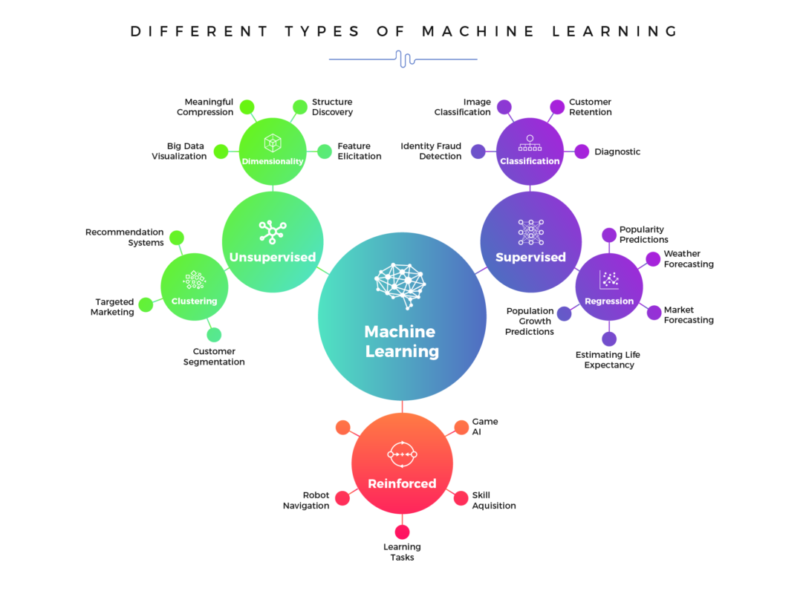
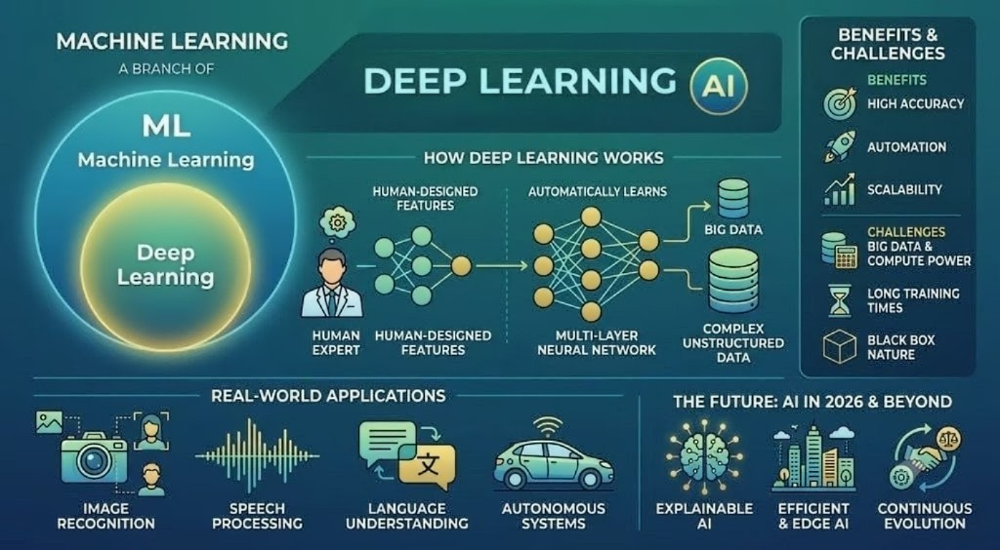

A strategic architectural analysis and technical framework comparing traditional Machine Learning (ML) against Deep Learning (DL) specifically tailored for the Healthcare Insurance domain.
To establish a clear evaluation framework that differentiates between ML and DL use cases. The goal is to help individuals map the correct technology to specific data architectures (structured vs. unstructured) and business needs without over-engineering solutions.
I conducted a deep comparative analysis of standard health insurance business problems—specifically member retention (churn) and call center transcript analysis. I evaluated both technological approaches against three critical pillars: data structure dependency, computational cost, and the strict regulatory need for model explainability in business decisions.
Generative AI — Gemini, Data Architecture Analysis, Algorithm Efficiency Profiling & Healthcare Domain Logic Modeling
This evaluation allows product, Quality Assurance, and engineering teams to make cost-effective, highly accurate technology choices. By understanding the critical need for model explainability in certain contexts versus the raw pattern recognition power needed in others, organizations can deploy the right AI tool for the exact right problem, avoiding unnecessary computational costs.
Traditional Machine Learning focuses on the development of algorithms that parse datasets, discover mathematical patterns, and construct predictive rules without explicit hard-coding. It relies on deterministic statistics and domain-driven feature engineering, proving highly efficient for processing structured, alphanumeric data entries.

| ML Category | Core Operational Focus | Data Requirement | Target Objective |
|---|---|---|---|
| Supervised Learning | Maps inputs to outputs based on historical, annotated training examples. | Labeled data points | Classification and continuous value regression. |
| Unsupervised Learning | Identifies intrinsic clusters, distributions, and structures within data without external guidance. | Unlabeled data points | Data segmentation, clustering, and dimensionality reduction. |
| Reinforcement Learning | Trains software agents to execute optimal decisions sequentially by evaluating system penalties and rewards. | State-action-reward loops | Behavior optimization and dynamic strategy execution. |
Projects data vectors into a high-dimensional space to compute an optimal separating hyperplane that maximizes the margin separating distinct binary classifications.
High-dimensional classification challenges, fraud verification pipelines, and medical status classification based on composite lab values.
Does not scale smoothly to exceptionally massive datasets; exhibits high sensitivity to background noise and overlapping feature spaces.
An ensemble model that constructs an ecosystem of diverse, un-correlated decision trees at training time, leveraging bootstrap aggregating to calculate an optimized consensus output.
Risk profiling, customer churn modeling, and continuous insurance premium estimation.
High structural complexity demands notable memory footprints; slightly less interpretative than a singular, standalone decision tree.
Partitions a dataset into a pre-allocated number of geometric clusters by iteratively assigning every data record to its nearest computed centroid using Euclidean distance vectors.
Demographics segmentation, regional resource mapping, and identifying anomalous outlier insurance claims.
Requires a fixed parameter definition ahead of time; highly susceptible to skewing from geographic outliers or improper initial centroid seeds.
An orthogonal linear transformation that maps multi-variate features into a lower-dimensional subspace, preserving the absolute maximum amount of variance possible.
High-dimensional database compression, and preprocessing steps to eliminate multicollinearity before model execution.
Transformed components become abstract linear combinations, severely hindering direct human business interpretability.
A model-free, value-based policy algorithm that computes an array of optimal action values (Q-values) to map out maximum cumulative rewards across states over time.
Dynamic price scaling engines, real-time logistics optimization, and automated test script traversal paths.
Susceptible to severe performance decay and memory overflow when dealing with immense state-action arrays.
A discrete-time mathematical formalization for modeling structural decisions where systemic outcomes are driven partly by agent choice and partly by environmental probabilities.
Simulating longitudinal operational sequences, analyzing multi-stage patient therapy pathways over long horizons.
Strictly relies on the property that future states depend solely on current status, which often oversimplifies real-world historic contexts.
Deep Learning scales machine learning capabilities into the domain of multi-layered Artificial Neural Networks. By flowing signals through high volumes of interconnected, non-linear hidden nodes, these systems automatically optimize feature discovery directly from raw inputs. This architecture eliminates the manual bottleneck of human feature extraction, though it exchanges algebraic explainability for raw computational depth.

| Architecture Type | Core Competency | When to Select This Model |
|---|---|---|
| Convolutional Neural Networks (CNN) | Extracts localized spatial hierarchies from multi-dimensional arrays using weight-sharing kernels. | Select for computer vision tasks, image processing, diagnostic scans, and spatial pattern extraction. |
| Recurrent Neural Networks (RNN / LSTM) | Preserves sequential context across temporal vectors by maintaining an internal recurrent state memory hook. | Select for time-series parsing, financial trend forecasting, and speech waveform sequencing. |
| Transformers (BERT / GPT) | Utilizes multi-head self-attention mechanisms to simultaneously weigh semantic dependencies across entire bodies of text. | Select for complex Natural Language Processing, text parsing, contextual intent tracking, and conversational interfaces. |
| Generative Adversarial Networks (GAN) | Pits a generator and a discriminator network against each other in a zero-sum game to synthesize authentic data distributions. | Select for synthetic image/data generation, privacy anonymization, and balancing sparse datasets. |
| Technical Factor | Traditional Machine Learning (ML) | Deep Learning (DL) |
|---|---|---|
| Optimal Data Structure | Highly structured, tabular data (SQL Databases, CSVs, Excel). | Massive, unstructured data sets (Raw Text, Audio, Images). |
| Feature Engineering | Manual process. Requires human domain expertise to extract data points. | Automatic process. Neural networks inherently learn hidden feature layers. |
| Hardware Requirements | Low to Moderate. Can often be trained on standard CPU environments. | Extremely High. Requires specialized GPUs for matrix multiplication. |
| Model Explainability | High. Algorithms like Decision Trees offer clear mathematical logic traces. | Low. Functions as a "Black-box" making auditing decisions difficult. |
As a Lead Quality Assurance Engineer in the healthcare insurance industry, I can relate both standard Machine Learning and Deep Learning technologies to several real-world business problems.
A healthcare insurance company wants to predict which members are likely to renew their health plans next year and which members are likely to switch to another insurer. The model can analyze structured data such as member age, plan type, premium amount, claim history, customer service interactions, and enrollment duration and come up with a probability of member retention.
Machine learning is suitable for this problem because the data is structured, and the important features are already known. Algorithms such as Support Vector Machine (SVM), Decision Trees, or Logistic Regression can learn from historical enrollment data and predict the likelihood of a member renewing their plan.
Deep learning is not the best choice for this scenario because the data consists mainly of structured fields stored in insurance systems and deep learning will be an over-kill to do the job. Traditional machine learning models can provide accurate predictions with less computational cost and are easier for business teams to understand and explain. Since member retention decisions often require business justification, explainable machine learning models are often preferred.
A healthcare insurance company receives thousands of customer service calls every day. These calls may relate to claims, benefits, prior authorizations, provider searches, or coverage questions. The company wants to analyze call transcripts to identify repeat-call patterns and proactively send interventions, such as benefit explanations, claim status updates, or personalized communications, before members call again hence reducing the operating cost by millions of dollars.
Deep learning is well suited for this use case because call transcripts are unstructured text data. Transformer-based NLP models such as BERT can automatically understand the context, sentiment, intent, and recurring issues within conversations. The model can identify members who are likely to call again and trigger proactive outreach to resolve concerns before they result in another customer service interaction.
Traditional machine learning is less suitable because it would require significant manual feature engineering. Extracting meaningful patterns, context, emotions, and intent from thousands of conversation transcripts would be difficult and less accurate. Deep learning can automatically learn these complex language patterns and provide better insights from customer interactions.
Both machine learning and deep learning have valuable applications in healthcare insurance. Machine learning is ideal for structured business problems such as predicting member renewals and retention because it is efficient and explainable. Deep learning is more effective for analyzing customer care transcripts because it can understand complex language and identify patterns in unstructured data. Together, these technologies can help healthcare insurers improve member experience, reduce call volume & costs associated, increase retention, and make more informed business decisions.